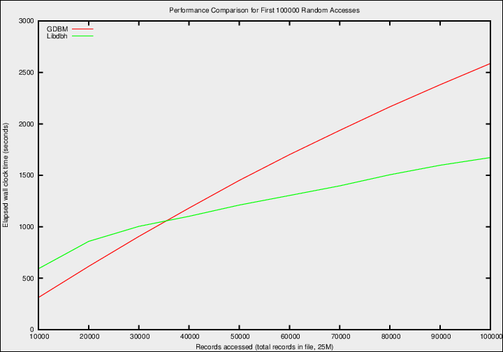
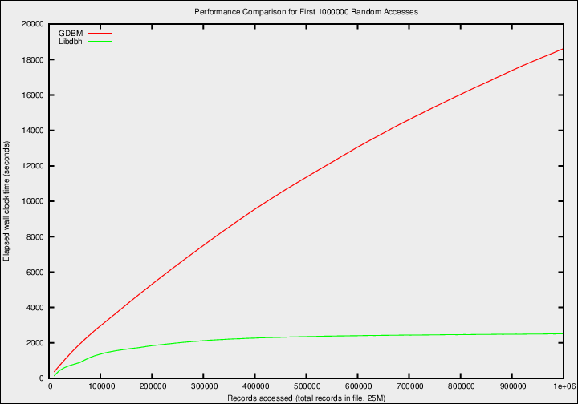
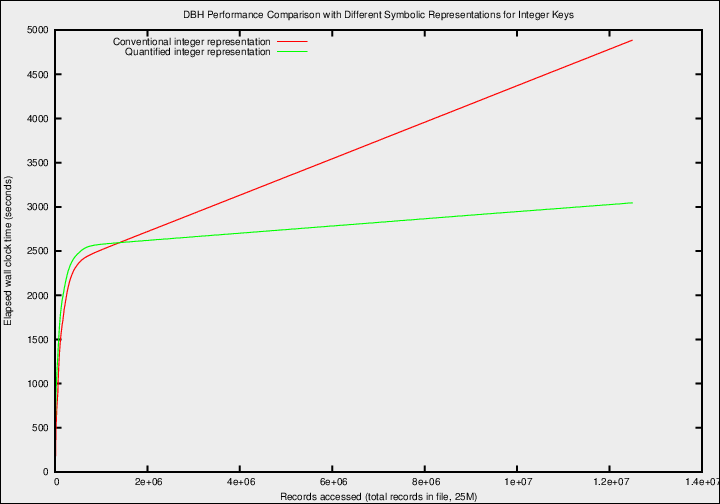

![[A GNU head]](/graphics/heckert_gnu.small.png) GNU Operating System
GNU Operating SystemGNU Libdbh
GNU Libdbh is a small library to create and manage 64-bit disk based hash tables.
Libdbh is quite similar to GNU gdbm, but is intended for increased performance when the number of records in your database is in the millions range or above. To see how libdbh performs against gdbm, see section performance
Downloading Libdbh
Libdbh can be found on Sourceforge: http://sf.net/projects/dbh/files/dbh/ and also on the main GNU ftp server: (soon)
Documentation
Documentation for Libdbh is available online, as is documentation for most GNU software. You may also find more information about Libdbh by running info libdbh or man libdbh, or by looking at /usr/share/doc/libdbh/, /usr/local/doc/libdbh/, or similar directories on your system. A brief summary of available commands is available by invoking man with the libdbh command.
Mailing lists
Libdbh has the following mailing list:
- libdbh
is used to discuss most aspects of
Libdbh,
including development and enhancement requests, as well as bug reports.
Currently this list will also used for general user help and discussion.
Announcements about Libdbh and most other GNU software are made on info-gnu (archive).
Security reports that should not be made immediately public can be sent directly to the maintainer. If there is no response to an urgent issue, you can escalate to the general security mailing list for advice.
Getting involved
Development of Libdbh, and GNU in general, is a volunteer effort, and you can contribute. For information, please read How to help GNU. If you'd like to get involved, it's a good idea to join the discussion mailing list (see above).
- Test releases
- Trying the latest test release (when available) is always
appreciated. Test releases of
Libdbh
can be found at
http://alpha.gnu.org/gnu/libdbh/
(via HTTP) and
ftp://alpha.gnu.org/gnu/libdbh/
(via FTP).
The next test release will include variable key size and optional memory key hash with code from another GNU project, gdbm. - Development
- For development sources, issue trackers, and other information, please see the Libdbh project page at savannah.gnu.org.
- Maintainer
- Libdbh is currently being maintained by Edscott Wilson Garcia. Please use the mailing lists for contact.
Performance
The main difference with gdbm lies in the domain of application. In what follows you will find performance tests results, conducted on a 4 core 4 GB box. The program to reproduce these tests is included in the libdbh-5.0.17 tarball, just in case you are interested in testing different setups. The test database consisted of 25M records with variable record data size. The code to generate this database in different formats is also included.
The first results show the conditions under which libdbh outperforms gdbm. While the number of records accessed from this database is less than a certain value, gdbm outperforms libdbh. But as the number of records increases, the amount of memory required by gdbm to manage the associated index hash becomes a limiting factor. On the test setup, once 35K records have been randomly accessed, libdbh begins to outperform gdbm. See graph 1. As the number of accesses to the database increases, the performance gain from libdbh becomes quite significant. The results when up to 1M records have been accessed are shown in graph 2.
|  |  |
But the libdbh performance can be enhanced even more. Have you ever tried to do a multiplication with Roman numerals? Not much fun. That's why Hindu numerals are so much better. Taking this change of symbolic representation a bit further, could there be a better way to represent numbers, say, for database index keys?
Yes, there are better ways.
The symbolic representation of natural numbers consists of a series of symbols from a symbol set. The symbol set for binary notation, for example, is {0,1}. As the magnitud of any particular number grows towards infinity, the amount of symbols drawn from the symbol set to represent the number tends to infinity as well.
Is there any reason why you cannot do a symbolic permutation of the above? How about a symbol set with infinite cardinality and fixed amount of symbols? You could call this symbolic representation of the natural numbers "quantified". This comes from quantity since the order of the quantified numbers is determined not only by the order of the digits but also by the sum of the symbols. Order is important so a one--to--one relationship can be establish with the natural numbers. Nothing is broken here, you are just looking at numbers from a different perspective.
To make use of quantified numbers, libdbh has a a few routines to handle index keys this way. But does it actually work?
It does. The performance difference between a dbh file indexed with hindu numbers and the same data indexed with quantified numbers is shown in graph 3.
|  |
The main performance gain comes from the fact that indexing by quantified numbers allows for the growth of balanced multidimensional trees, much the way Nature works in the forest.
Put simply, hindu numbers are represented by an infinite amount of symbols from a symbol set of finite cardinality, while quantified numbers are represented by a finite amount of symbols from a set of symbols of infinite cardinality. Both represent the exact same thing. The only difference is that hindu numbers are much more useful for counting with our fingers, while quantified numbers are better handled by computers.
General Information
DBH (acronym for Disk Based Hashtable) is a convenient way to associate unsigned character keys to data records. Any kind of digital information can go into the data record, such as text, graphic information, database structures, you name it. The idea behind using a DBH is build the key index directly into a multidimensional file format.
If you are a technical guy and want to know how the guts of DBH are arranged around quantified numbers, take a look at this white paper, which is a first draft of a paper which will be augmented with performance tests.
DBH adopters usually have very large datasets with a large number of records, very fast access requirements, or very complex datasets.
Similar to XML documents, DBH files allow users to specify complex data structures. In contrast to XML documents, DBH files can contain binary data (in many representations) and allow direct access to parts of the file without first parsing the entire contents.
DBH, not surprisingly, allows data objects to be expressed in a very natural manner. DBH supports n-dimensional datasets and each element in the dataset may itself be a complex object. Relational databases offer excellent support for queries based on field matching, but are not well-suited for sequentially processing all records in the database or for subsetting the data based on a multidimensional coordinate-style lookup.
In-house data formats are often developed by individuals or teams to meet the specific needs of their project. While the initial time to develop and deploy such a solution may be quite low, the results are often not portable, not extensible, and not high-performance. In many cases, the time devoted to extending and maintaining the data management portion of the code takes an increasingly large percentage of the total development effort - in effect reducing the time available for the primary objectives of the project. DBH offers a flexible format and powerful API backed by over years of development history.
How does DBH grow balanced trees?
This is done using some concepts borrowed from mathematics. The first one is the concept of natural numbers, {1, 2, 3, ...}. Natural numbers is how we count, and there are infinite, countable and have a certain order. But we must not think that they are the only representation. Any other set which is countable, infinite and has a certain order is the exact same thing, even though they may seem strange or weird. Well constructed DBH tables make use of cuantified numbers, which are a different way of expressing the natural numbers, with a different ordering rule. Assuming that the computation bottleneck is the transfer of data from memory to CPU registers, cuantified numbers is the way index records to guarantee the fastest possible retreival speed.
In order to minimize access to any record in particular, the dimension of the DBH tree should equal the natural logarithm of the number of records in the DBH file. If the records represented data of the entire population of the Earth, the dimension (or keylenth) of the DBH file would be 22. Considering the human genome contains more than 3.4 billion base pairs, associating a data structure to each base pair would require a dimension of 21. 64-bit DBH garantees that such a DBH files can grow up to 9.2E+18 Bytes in size, enough for an average record size of 2.7 GBytes for each base pair.
HTML documentation and man pages for all function calls will be installed. In the examples subdirectory there is a simple hash example (simple_hash.c) and a more complex example (filesystem.c). Make sure you have a look at them before you start.
Licensing
Libdbh is free software; you can redistribute it and/or modify it under the terms of the GNU General Public License as published by the Free Software Foundation; either version 3 of the License, or (at your option) any later version.